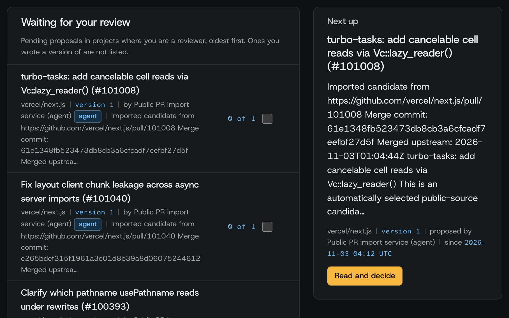
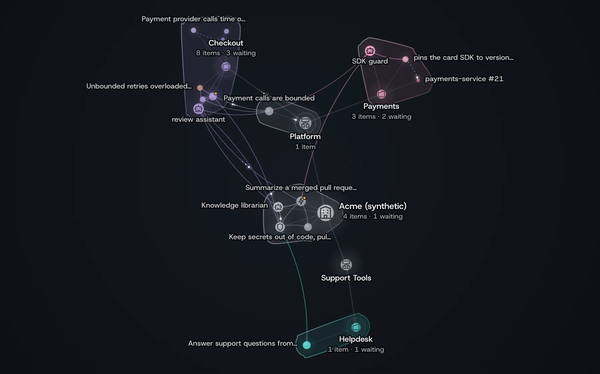

Decisions change.
Keep agents current.
Other memory tools remember what was said; MemoryNet remembers what was decided and flags work pinned to old versions.
- 33b44c5arev
1
Replaced: Retry HTTP 429 and 503 whileretriesSoFaris less than 3. - eec9b2e2rev
1Current: Retry HTTP 503 only while
retriesSoFaris less than 2. Never retry HTTP 429.
- Approved by
- Fixture reviewer91c474b9
- When
- Cites
- pull/101pull/102
- Why
- The replacement removes HTTP 429 retries and reduces the retry limit.
- Affected work
- Update transport retries currentreview_neededStale export blocked
Replayed from the walkthrough’s synthetic fixture run; approvals are fixture actions, not independent human review. The replacement is a new decision, not a second revision of the old one.
Agents build on yesterday’s decision.
They don’t fail loudly. A reversed retry policy, a deprecated API, a dropped constraint: the code still compiles. The mistake ships.
| Before | With MemoryNet |
|---|---|
Instructions go stale silently
|
Stale-work detectionTasks pin decision versions and spec hashes. Changes flag them; stale exports are refused, not warned about. |
Chat memory has no authorityAutomatic memory recalls what was said, including the proposal that was rejected. No approval, no scope, no citation to check. |
Exact-version approvalText, applicability, paths, and links are approved as one version. Editing means a new version and new approvals. |
Code graphs have no governanceA graph knows what calls what. It doesn’t know which decision a human approved, for which branch, or that it was replaced on Tuesday. |
Scoped to repo, branch, path and timeGuidance applies only where a reviewer said it applies. Legacy unscoped records never leak into scoped delivery. |
Capture, approve, deliver, revalidate on change.
The lifecycle every MemoryNet decision follows, enforced by the database, not by convention.
-
Capture evidence
Merged PRs, specs, or an agent’s proposal land as cited, pending candidates. Upstream merge is never local approval.
pull/101span [77, 134)pending
-
Approve the exact version
A different human (never the author, never an agent) approves the precise text, paths, repo, branch, and validity window. 1 to 3 reviewers per project policy.
Fixture reviewer33b44c5a rev 1Agent approval refused
-
Deliver scoped context
Agents call
get_task_contextfor their task and files. Only approved, current, in-scope guidance returns, with reasons, citations, and a receipt.receipt 72bdf73erepo 1001main
-
Flag what changed
Approve a replacement and every pinned task is marked stale. Stale context cannot be exported until a human revalidates it.
The replacement’s scripted conflict hint names decision 33b44c5a, revision 1. The original remains authoritative while the replacement is pending.
eec9b2e2 rev 1Update transport retriesreview_neededStale export blocked
The moment a decision changes, work pinned to the old version is flagged, and stale exports are refused. Readings come from the walkthrough’s synthetic fixture run.
Inspect the source, then decide.


View captured repository and pull request evidence.
Learn network navigationInspect imported candidates before approving them as guidance.
Try the review workflowView original files in a separately configured source checkout.
Try your repository-
Original pull request
vercel/next.js #101008
turbo-tasks: add cancelable cell reads via Vc::lazy_reader()
Read the original PR -
Pinned evidence
Original merge commit
Inspect the commit61e1348fb523 -
Your review
Candidate remains pending
Imported text becomes guidance only after explicit review of the exact revision.
Inspect the review queue
Original public source. Upstream merge does not imply local approval.
Four MCP tools, none can approve.
Everything a coding agent needs to stay current, and nothing it can use to approve its own guidance.
{
"name": "get_task_context",
"arguments": {
"task": "Update the retry policy",
"paths": ["src/api/retry.ts"],
"maxTokens": 2000
}
}
← 200 items[0] {
"title": "Retry at most twice",
"revision": 2, "score": 0.94,
"reasons": [{ "kind": "governs_path",
"pattern": "src/api/**" }],
"citations": [{ "reference": "pull/101008" }]
} // receipt recordedContext that explains itself
Bounded graph expansion over reviewed links (depends_on, refines,
conflicts_with) with a machine-readable reason for every item: governs-this-path,
matched-task, linked, shared-evidence.
Task-aware, permission-filtered, packed to a token budget, with the reason every item was included.
Context includes reasons, citations, and version receipts. Agents cannot approve.
receipt 8f2c…a41b
memory 3b363a47… rev 2
approved by 2 reviewers · exact version
scope repo 1001 · branch main
chain sha256(prev : seq : payload) ✓
// verify anytime: npm run ledger:verifyTamper-evident ledger
Approvals and receipts chained with SHA-256, verifiable offline, with external checkpoints against full rewrites.
Every approval and delivery is chained into a tamper-evident ledger you can verify offline.
Synthetic demonstration evidence; this is not a real pull request. Decision: Retry HTTP 429 and 503 while retriesSoFar is less than 3.
AI drafts, humans decide
Optional model extraction proposes candidates with exact source quotes and content flags (secret, personal-data, instruction-like). Publication is always a pending proposal awaiting human review.
npm ci --ignore-scripts
npm run setup -- --repo OWNER/REPO --reviewer "A teammate" --client claude
npm startOne command configures your coding client. The binding scopes every call to one project, repository, and branch, and expires.
The same context for coding agents.
MCP delivers reviewed guidance for the task and files being changed. Agents can propose decisions and report stale guidance; people approve every published version.
Connect a coding agentDifferent tools remember different things.
Automatic recall tools are excellent at what they do. MemoryNet is built for the moment a decision must be trusted.
| Capability | MemoryNet | Mem0 | claude-mem | Graphify | AGENTS.md |
|---|---|---|---|---|---|
| Human approval of exact version | Enforced (DB) | Git review only | |||
| Repo / branch / path / time scope | All four | User/session | |||
| Citations to source evidence | Every item | Code refs | |||
| Stale-decision blast radius | Flags + blocks export | Graph impact | |||
| Tamper-evident audit trail | SHA-256 ledger | Git history | |||
| Automatic capture | Proposals + extraction | Hooks | AST build | Manual | |
| Semantic / graph retrieval | Lexical + reviewed graph | Vector + graph | Vector | Code graph | File read |
| Coding-agent delivery | Scoped MCP + receipts | SDK | Auto-inject | MCP queries | Native |
Based on public documentation, November 2026. Rivals lead on automatic recall; MemoryNet leads where a wrong memory is worse than none.
Built and verified locally.
A local pilot for public and synthetic evidence.
Personal and work trials450+automated tests
- AI Decision Extraction
- Meta suggests decisions and possible conflicts; exact source quotes and human review establish authority.
- Agent Audit Trail
- Task-aware MCP with citations, exact versions, and a receipt for every delivery: 100% of deliveries receipted and chained.
- Stale-Work Radar
- Find tasks pinned to changed decisions and block stale context exports.
- Recovery
- Verified backups, pre-upgrade snapshots, and audit integrity.
Show the evidence, keep the claims honest.
The lifecycle demo verifies stale-context blocking. Earlier coding observations do not establish a benefit over maintained instructions, and the site says so.
- Synthetic retry task
- MemoryNet, structured decisions, and current dated sources passed. A deliberately outdated instructions-only control failed. One observation per arm.
- Controlled ESLint task
- Both ordinary sources and MemoryNet passed seven checks. Resource equivalence was not established.
- Next measurement
- A preregistered comparison of in-flight decision changes with equal sources, model budgets, and human maintenance accounting remains to be run.
Historical observations reviewed November 3, 2026; no percentage improvement or production effectiveness is claimed. Read the observation summary or inspect the executed lifecycle replay.
Evidence and production boundaries
A configured local workspace opens as one operator; a clean checkout provides test personas. Existing GitHub or access-key login gates stay enabled, and GitHub sign-in can verify linked accounts. The app remains a local prototype for public or synthetic evidence.
Imported PRs are evidence. Scoped guidance requires explicit applicability and exact-revision approval. Pending and legacy unscoped records are excluded from scoped agent context.
Real-team benefit remains unproven. Automatic notifications, persistent task-bound delivery, and verified CI integration remain outside the current workflow.
Read the remaining workStart with one decision.
From a source checkout, run the decision-change walkthrough, then connect your public repository and coding agent.
npm ci --ignore-scripts
npm run demoOpen .local/decision-demo/index.html. Scripted extraction and fixture
approvals; real MCP and stale-export checks. No key or account required.
